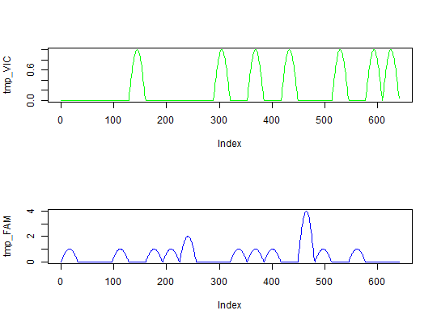

A function that simulates results of a droplet digital PCR.
sim_dpcr(m, n, times, n_exp = 1, dube = FALSE, pos_sums = FALSE, fluo = NULL)
times argument.TRUE, the function is strict implementation of digital
PCR simulation (as in Dube et al., 2008). If FALSE, the function
calculates only approximation of Dube's experiment. See Details and
References.TRUE, function returns only the total number of
positive (containing at least one molecule) chamber per panel. If
FALSE, the functions returns a vector of length equal to the number
of chambers. Each element of the vector represents the number of template
molecules in a given chamber.NULL, the function calculates number of molecules per
well or total number of positive droplets. If list of two, the first
argument defines smoothness of the fluorescence curve and second space
between two consecutive measured droplets. Space must be a vector containing
positive integers of the length n or 1.If the pos_sums argument has value FALSE, the function
returns matrix with \(n\) rows and \(n_panels\) columns. Each column
represents one plate. The type of such simulation would be "nm". If the
pos_sums argument has value TRUE, the function return matrix
with one row and \(n_panels\) columns. Each column contains the total
number of positive chambers in each plate and type of simulation would be
set as "tnp".
In each case the value is an object of the dpcr class.
The function contains two
implementations of the array digital PCR simulation. First one was described
in Dube at. al (2008). This method is based on random distributing \(m
\times times\) molecules between \(n \times times\)
chambers. After this step, the required number of plates is created by the
random sampling of chambers without replacement. The above method is used,
when the dube argument has value TRUE.
The higher the value of the argument times, the simulation result is
closer to theoretical calculations.
Although Dube's simulation of digital PCR was developed for array digital PCR, it's also viable for simulating droplet-based methods.
#simulate fluorescence data tmp_VIC <- sim_dpcr(m = 7, n = 20, times = 5, fluo = list(0.1, 0)) tmp_FAM <- sim_dpcr(m = 15, n = 20, times = 5, fluo = list(0.1, 0)) par(mfrow = c(2,1)) plot(tmp_VIC, col = "green", type = "l") plot(tmp_FAM, col = "blue", type = "l")summary(tmp_FAM)#> #> Number of positive partitions: 11 #> Total number of partitions: 20 #> #> Number of runs: 1 #> Number of experiments: 1 #> #> experiment replicate assay method lambda lambda.low lambda.up m #> Experiment1 1 Unknown dube 0.7985077 0.4034189 1.461157 15.97015 #> Experiment1 1 Unknown bhat 0.7985077 0.5513011 1.045714 15.97015 #> m.low m.up c c.low c.up k n #> 8.068377 29.22314 0.7985077 0.4034189 1.461157 11 20 #> 11.026022 20.91429 0.7985077 0.5513011 1.045714 11 20 #>The assumed volume of partitions in each run is equal to 1.The assumed volume uncertainty in each run is equal to 0.#> #> Number of positive partitions: 6, 7, 6, 6, ... #> Total number of partitions: 20, 20, 20, 20, ... #> #> Number of runs: 5 #> Number of experiments: 1 #> #> experiment replicate assay method lambda lambda.low lambda.up m #> Experiment1 1 Unknown dube 0.3566749 0.10443145 0.6948217 7.133499 #> Experiment1 1 Unknown bhat 0.3566749 0.21028993 0.5030600 7.133499 #> Experiment1 2 Unknown dube 0.4307829 0.15194293 0.8187950 8.615658 #> Experiment1 2 Unknown bhat 0.4307829 0.26670039 0.5948654 8.615658 #> Experiment1 3 Unknown dube 0.3566749 0.10443145 0.6948217 7.133499 #> Experiment1 3 Unknown bhat 0.3566749 0.21028993 0.5030600 7.133499 #> Experiment1 4 Unknown dube 0.3566749 0.10443145 0.6948217 7.133499 #> Experiment1 4 Unknown bhat 0.3566749 0.21028993 0.5030600 7.133499 #> Experiment1 5 Unknown dube 0.2231436 0.02500554 0.4704910 4.462871 #> Experiment1 5 Unknown bhat 0.2231436 0.11134015 0.3349470 4.462871 #> m.low m.up c c.low c.up k n #> 2.0886291 13.896433 0.3566749 0.10443145 0.6948217 6 20 #> 4.2057987 10.061199 0.3566749 0.21028993 0.5030600 6 20 #> 3.0388586 16.375900 0.4307829 0.15194293 0.8187950 7 20 #> 5.3340077 11.897309 0.4307829 0.26670039 0.5948654 7 20 #> 2.0886291 13.896433 0.3566749 0.10443145 0.6948217 6 20 #> 4.2057987 10.061199 0.3566749 0.21028993 0.5030600 6 20 #> 2.0886291 13.896433 0.3566749 0.10443145 0.6948217 6 20 #> 4.2057987 10.061199 0.3566749 0.21028993 0.5030600 6 20 #> 0.5001108 9.409819 0.2231436 0.02500554 0.4704910 4 20 #> 2.2268030 6.698939 0.2231436 0.11134015 0.3349470 4 20 #>